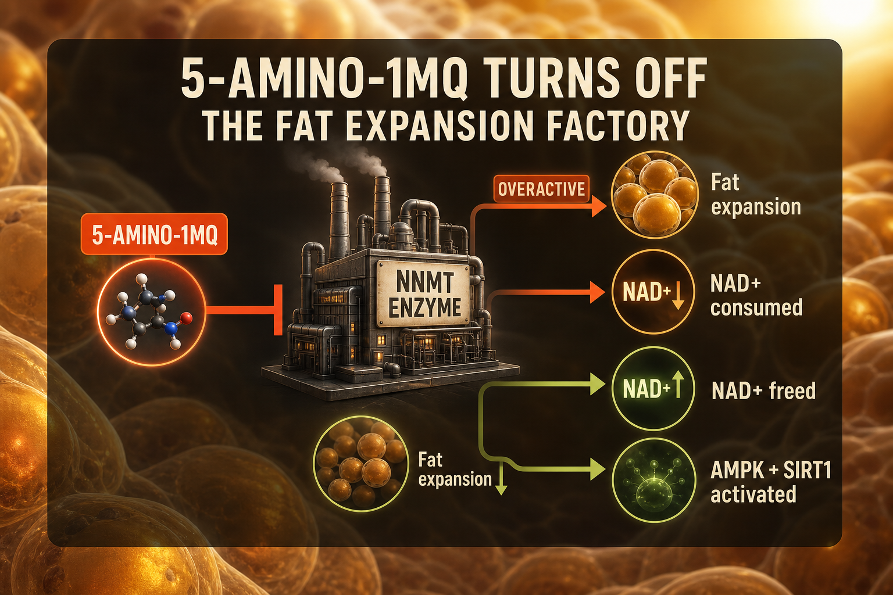

What 5-Amino-1MQ Is
5-Amino-1-methylquinolinium (5-Amino-1MQ) is a small molecule - not technically a peptide, but commonly sold alongside research peptides - that inhibits NNMT (nicotinamide N-methyltransferase), an enzyme expressed in fat tissue that is upregulated in obesity and metabolic disease.
A landmark 2014 Harvard Medical School study showed that NNMT inhibition in mice reduced fat mass without diet changes. The mechanism: increasing NAD+ precursor availability, activating AMPK and SIRT1, reducing fat cell expansion, and improving insulin sensitivity. 5-Amino-1MQ is taken orally as capsules - no injection required.
Plain English Version
Turning Off the Factory That Expands Fat Cells
Fat cells are metabolically active with their own signaling systems. NNMT is an enzyme factory inside fat tissue that, when overactive, makes fat cells more efficient at expanding and storing fat, while consuming NAD+ precursors your cells need for energy and repair.
In people with obesity and metabolic disease, NNMT is overactive. 5-Amino-1MQ tells that factory to slow down. Fat cells become less efficient at expanding. NAD+ precursor availability improves. AMPK and SIRT1 - the same longevity pathways MOTS-c activates - get upregulated. The metabolic environment shifts away from fat storage toward fat burning and cellular maintenance.
One sentence: 5-Amino-1MQ turns down the enzyme that makes fat cells expand efficiently while freeing up NAD+ resources for energy and cellular maintenance.
How To Picture It

How It Works
5-Amino-1MQ inhibits NNMT, which methylates and consumes nicotinamide (a NAD+ precursor). By inhibiting this consumption, it increases cellular NAD+ availability. Higher intracellular NAD+ activates SIRT1 and AMPK - the same pathways as NAD+ supplementation and MOTS-c - through a third independent entry point.
Documented Benefits
Dosing Protocol
| Phase | Dose | Frequency | Route |
|---|---|---|---|
| Starting | 50mg | Daily | Oral |
| Standard | 100-150mg | Daily | Oral |
| Advanced | 150-200mg | Daily | Oral |
Dosage Build-Up Timeline
- Week 1-2: 50mg daily - tolerance
- Week 3-8: 100mg daily - standard
- Week 9+: 150mg if needed
- Reassess at 8-12 weeks
Common Mistakes
shifts metabolic environment gradually
mechanism frees NAD+ precursors; actual NAD+ amplifies the effect
no metabolic compound overrides poor diet and sleep
complements them through different mechanism
Contraindications And Cautions
insufficient human data
AMPK activation may interact; discuss with physician
What To Track
- Body fat percentage or waist monthly
- Fasting glucose and insulin sensitivity
- Energy levels weekly
- NAD+ status if testable
Stacks Well With
- NAD+ - most direct synergy; 5-Amino-1MQ frees NAD+ precursors that injectable NAD+ can supply
- MOTS-c - both activate AMPK; dual approach from different entry points
- Retatrutide - metabolic peptide plus NNMT inhibition for comprehensive support
Sources
- Neelakantan H et al. Selective NNMT inhibition. Biochemistry, 2018. pubmed.ncbi.nlm.nih.gov
- Hong S et al. NNMT adipose tissue metabolic disease. Harvard 2014. pubmed.ncbi.nlm.nih.gov
- PeptideDosingProtocols 5-Amino-1MQ. peptidedosingprotocols.com
For educational and research documentation purposes only. Not medical advice. Always speak with a qualified healthcare professional before making health decisions.